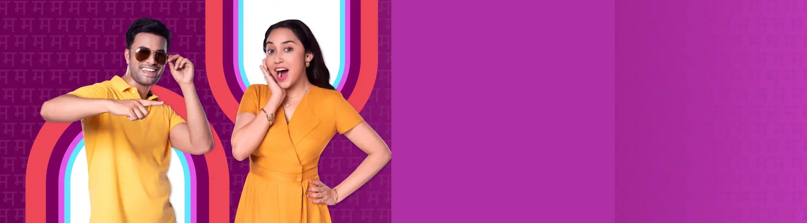

Meesho Gold — Products you Love. Quality we Trust.

Responsive by default
This shell adapts to any screen: a thumb-friendly bottom nav on phones, and a top navigation bar on tablets and desktops. Resize the window to see it switch.
Scalable structure
Design tokens, layout, components, and responsive rules each live in their own file — so extending the UI never means editing a single giant stylesheet.
Reusable components
Buttons, cards, form fields, and nav items are ready to use and easy to restyle.
Themeable
A built-in light/dark toggle persists the user's choice. Every color comes from a single token file.